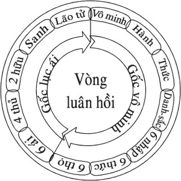
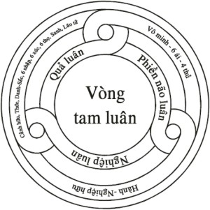

|
BuddhaSasana Home Page |
Vietnamese, with Unicode Times font |
Tìm hiểu PHÁP MÔN NIỆM PHẬT
Tỳ
kheo Hộ Pháp
PL 2546 - TL 2002
|
Ý NGHĨA ÂN ÐỨC PHẬT Ðức Phật có 9 Ân Ðức theo thứ tự. ÂN ÐỨC PHẬT THỨ NHẤT I- Itipi
so Bhagavà Araham Ðức Thế Tôn có Ân Ðức Araham. Araham có 5 ý nghĩa:
Giải thích tóm tắt 1- Araham có ý nghĩa xa lìa mọi phiền não là thế nào? Phiền não dịch từ tiếng Pàli Kilesa. Kilesa = phiền não là những bất thiện tâm sơû đồng sanh với những bất thiện tâm làm cho thân tâm nóng nảy, khó chịu, khổ thân, khổ tâm; phiền não còn làm cho tâm, tâm sở bị ô nhiễm, khiến tạo nghiệp do thân, khẩu, ý. Phiền não có 10 loại: 1- Tham: Ðó là tham tâm sở đồng sanh với 8 tham tâm có trạng thái tham muốn, hài lòng say mê trong đối tượng. 2- Sân: Ðó là sân tâm sở đồng sanh với 2 sân tâm, có trạng thái hung dữ, tàn bạo, không hài lòng nơi đối tượng. 3- Si: Ðó là si tâm sở đồng sanh với 12 bất thiện tâm, có trạng thái si mê không biết thật tánh của các pháp. 4- Tà kiến: Ðó là tà kiến tâm sở đồng sanh với 4 tham tâm hợp tà kiến, có trạng thái thấy sai, chấp lầm ở đối tượng. 5- Ngã mạn: Ðó là ngã mạn tâm sở đồng sanh với 4 tham tâm không hợp tà kiến, có trạng thái so sánh "Ta" hơn người, bằng người, kém thua người. 6- Hoài nghi: Ðó là hoài nghi tâm sở đồng sanh với si tâm hợp hoài nghi, có trạng thái hoài nghi ở đối tượng. 7- Buồn chán: Ðó là buồn chán tâm sở đồng sanh với 4 tham tâm và * sân tâm (loại tâm cần động viên), có trạng thái không hăng hái, buông bỏ đối tượng. 8- Phóng tâm: Ðó là phóng tâm tâm sở đồng sanh với 12 bất thiện tâm, có trạng thái không an trụ ở đối tượng. 9- Không hổ thẹn: Ðó là không hổ thẹn tâm sở đồng sanh với 12 bất thiện tâm, có trạng thái tự mình không biết hổ thẹn tội lỗi, khi hành ác. 10- Không ghê sợ: Ðó là không ghê sợ tâm sở đồng sanh với 12 bất thiện tâm, có trạng thái không biết ghê sợ tội lỗi, khi hành ác. Ðó là 10 loại phiền não, mỗi khi có phiền não nào phát sanh ở bất thiện tâm nào, thì không những làm cho tâm bị ô nhiễm, nóng nảy, mà còn làm cho thân cũng nóng nảy, khó chịu, mặt mày mất vẻ tự nhiên, không còn tươi tính... Tính chất của phiền não có ba loại: 1- Vìtikkamakilesa: Là phiền não loại thô, được biểu hiện ra ở thân hành ác, khẩu nói ác. Phiền não loại thô này có thể diệt bằng pháp hành giới, có tác ý thiện tâm (cetanà) giữ gìn giới cho thân và khẩu được trong sạch, thì diệt từng thời loại phiền não này. 2- Pariyutthànakilesa: Là phiền não loại trung phát sanh ở trong tâm, đó là 5 pháp chướng ngại [*], làm cho tâm cảm thấy khó chịu khổ tâm; ngăn cản mọi thiện pháp. Loại phiền não này diệt bằng pháp hành thiền định, khi chứng đắc bậc thiền, nhờ 5 chi thiền, có thể diệt bằng cách đè nén, chế ngự được loại phiền não này.
3- Anusayakilesa: Là phiền não cực kỳ vi tế ?n tàng ngấm ngầm ở trong tâm thức, đó là 7 pháp ngủ ngầm trong tâm [*] không hiện rõ. Loại phiền não này diệt bằng pháp hành thiền tuệ, khi chứng đắc Thánh Ðạo Tuệ mới có thể diệt đoạn tuyệt được loại phiền não này.
Phiền não tính rộng có 1500 loại: 10 loại phiền não kể trên, khi chúng liên quan đến đối tượng làm nhân duyên để phát sanh phiền não, tính rộng có 1500 loại phiền não. Cách tính như sau:
Thật ra, 10 loại phiền não trong bất thiện tâm mới làm cho tâm bị ô nhiễm, làm cho tâm nóng nảy, khó chịu, khổ tâm, khổ thân. Phiền não làm nhân duyên trực tiếp tạo mọi ác nghiệp và làm nhân duyên gián tiếp tạo mọi thiện nghiệp trong tam giới (do vô minh nên tạo ác nghiệp, thiện nghiệp); để rồi cho quả của nghiệp dẫn dắt trong vòng tử sanh luân hồi trong ba giới bốn loài [*].
Nghiệp này được dẫn dắt do bởi tham ái (tanhà). Tham ái đó là tham tâm sở (lobhacetasika). Tham ái có tất cả 108 loại. Tham ái có 108 loại: Cách tính 108 loại tham ái theo 6 đối tượng, 3 tính chất, 2 bên, 3 thời như sau: Ðối tượng của tham ái có 6:
Tính chất của tham ái có 3:
2 bên:
Thời gian có 3:
Như vậy, tóm lại tham ái phát sanh do 6 đối tượng, x 3 tính chất, x 2 bên, x 3 thời (6x3x2x3) = 108 loại tham ái là nhân phát sanh khổ tái sanh, dẫn đến khổ già, khổ bệnh, khổ chết... bao nhiêu nỗi khổ khác không sao kể xiết, đều do tham ái là nhân sanh mọi khổ đế ấy. Ðức Bồ Tát Siddhattha diệt đoạn tuyệt được tất cả 1.500 loại phiền não, 108 loại tham ái không còn dư sót bằng 4 Thánh Ðạo Tuệ tại dưới đại cội Bồ Ðề vào canh chót đêm rằm tháng tư (âm lịch), trở thành bậc Chánh Ðẳng Giác độc nhất vô nhị đầu tiên trong toàn thế giới chúng sinh. Ngoài ra, Ngài còn có khả năng đặc biệt tận diệt được mọi tiền khiên tật (vàsanà) [*] do tích luỹ từ vô lượng kiếp ở quá khứ. Cho nên, Ðức Phật có mỗi hành vi cử chỉ đi, đứng, ngồi, nằm, nói năng... không thể nào có thể chê trách được.
Do đó, Ðức Thế Tôn có Ân Ðức Araham với ý nghĩa xa lìa mọi phiền não và tiền khiên tật không bao giờ phát sanh được nữa, bất cứ lúc nào cho đến khi tịch diệt Niết Bàn. 2- Araham có ý nghĩa diệt đoạn tuyệt mọi kẻ thù là phiền não như thế nào? Ðức Phật dạy kẻ thù nguy hiểm chính là 1.500 loại phiền não trong tâm của mình. Ngài gọi phiền não là kẻ thù, là vì ở trong đời này, kẻ thù thường tìm cơ hội làm khổ mình, sát hại mình, không có một kẻ thù nào mong cho mình được an lạc. Cũng như vậy, phiền não phát sanh trong bất thiện tâm làm cho mình khổ tâm, khổ thân, nóng nảy, khó chịu, còn khiến mình tạo mọi ác nghiệp, làm khổ chúng sinh khác, để rồi phải chịu quả khổ trong kiếp hiện tại lẫn nhiều kiếp vị lai. Sự thật, chỉ có phiền não bên trong bất thiện tâm của mình, mới trực tiếp làm khổ mình, còn phiền não bên ngoài người khác không trực tiếp làm khổ mình được, nếu mình không tiếp nhận. Ví dụ: người ta mắng chửi, đánh đập mình; nếu mình có tâm nhẫn nại, không sân hận, phiền não không sanh, thì mình không bị khổ tâm; nếu tâm phiền não sân hận phát sanh, thì chính phiền não bên trong mình làm cho mình khổ tâm, hoàn toàn không phải phiền não bên ngoài của người khác làm cho mình khổ tâm. Còn phần khổ thân thuộc về quả của nghiệp không một ai tránh khỏi, dầu là Ðức Phật hay chư bậc Thánh Arahán. Ðức Phật và chư bậc Thánh Arahán diệt đoạn tuyệt được tất cả 1.500 loại phiền não rồi, nên hoàn toàn không còn khổ tâm nữa; nhưng còn có sắc thân, vẫn còn có khổ thân cho đến khi hết tuổi thọ tịch diệt Niết Bàn, chấm dứt tử sanh luân hồi trong ba giới bốn loài. Khi ấy mới thật là giải thoát hoàn toàn mọi cảnh khổ. Ðức Bồ Tát Siddhattha đã diệt đoạn tuyệt tất cả mọi kẻ thù là 1.500 loại phiền não, bằng 4 Thánh Ðạo Tuệ tại dưới đại cội Bồ Ðề vào canh chót đêm rằm tháng tư (âm lịch) trở thành bậc Chánh Ðẳng Giác độc nhất vô nhị đầu tiên trong toàn thế giới chúng sinh. Do đó, Ðức Thế Tôn có Ân Ðức Araham với ý nghĩa diệt đoạn tuyệt mọi kẻ thù là phiền não không còn dư sót. 3- Araham có ý nghĩa phá huỷ vòng luân hồi trong ba giới bốn loài như thế nào? Vòng luân hồi đó chính là pháp "Thập Nhị Duyên Sanh" có 12 chi pháp:
Từ vô minh đến lão tử gồm có 12 chi pháp. Pháp này làm duyên để sanh pháp kia là quả; pháp quả ấy trở lại làm duyên để sanh pháp quả khác, và cứ như vậy duyên quả liên hoàn với nhau thành vòng luân hồi, không có chỗ bắt đầu và cuối cùng. Như vậy, vô minh chỉ là nhân duyên quá khứ không phải là nhân bắt đầu, vì vô minh còn là quả của bốn pháp trầm luân. Như Ðức Phật dạy:
Vòng luân hồi thập nhị duyên sanh này phân chia thành tam luân, chuyển biến theo chiều hướng nhất định.
Theo vòng luân hồi thì không thể biết được chỗ bắt đầu và chỗ cuối cùng, nên chỉ nhận biết theo định luật nhân quả, mà nhân quả theo pháp thập nhị duyên sanh, thì mỗi chi pháp không thuần chỉ là nhân, là quả, mà sự thật, mỗi chi pháp là quả của pháp trước, trở lại làm nhân duyên của pháp sau, và cứ tiếp tục như vậy theo định luật nhân quả liên hoàn tiếp nối với nhau thành vòng luân chuyển không ngừng từ kiếp này sang kiếp khác, từ vô thủy đến vô chung, trong vòng tử sanh luân hồi trong ba giới bốn loài; thường chỉ có thể thấy rõ sự thay đổi [*] về phần sắc thân hay gọi là sắc uẩn mà thôi; còn phần tâm gọi là danh uẩn có 4 uẩn (thọ, tưởng, hành, thức uẩn) liên quan nhân duyên sanh rồi diệt, diệt rồi sanh liên tục không ngừng từ đời này sang đời khác do năng lực của nghiệp mà mình đã tạo, từ vô thủy đến vô chung đối với chúng sinh còn vô minh và tham ái.
Vòng luân hồi "Thập Nhị Duyên Sanh" luân chuyển, biến đổi theo ba luân: Phiền não luân --> Nghiệp luân --> Quả luân --> Phiền não luân... Biểu tượng vòng luân hồi, vòng tam luân  
1- Phiền não luân khiến tạo nghiệp luân. Chúng sinh còn vô minh, lục ái, tứ thuû làm nhân duyên khiến tạo nên thiện nghiệp, bất thiện nghiệp do thân, khẩu, ý. * Phiền não làm nhân duyên tạo thiện nghiệp. Số chúng sinh do vô minh không biết rõ chân lý Tứ thánh đế, không biết khổ của ngũ uẩn, do đó, muốn hưởng sự an lạc tạm thời nên tạo mọi thiện nghiệp như:
Sự an lạc trong cõi tam giới này không phải là chân lý, mà chúng chỉ có tính cách tạm thời tuỳ theo năng lực của thiện nghiệp ấy. * Phiền não làm nhân duyên tạo bất thiện nghiệp. Số chúng sinh do vô minh không biết rõ bất thiện nghiệp (ác nghiệp) cho quả khổ ở kiếp hiện tại lẫn nhiều kiếp ở vị lai. Và cũng có số chúng sinh dầu nghe hiểu biết bất thiện nghiệp cho quả khổ như vậy, nhưng vì vô minh, tham ái, có nhiều năng lực quá, nên xui khiến tạo mọi bất thiện nghiệp bằng thân như: sát sanh, trộm cắp, tà dâm; bằng khẩu như: nói dối, nói lời đâm thọc chia rẽ, nói lời thô tục, nói lời vô ích; bằng ý như: tham lam, thù hận, tà kiến. Như vậy, gọi là Phiền não luân khiến tạo Nghiệp luân. 2- Nghiệp luân cho quả luân Chúng sinh còn phiền não đã tạo thiện nghiệp, bất thiện nghiệp, thì ắt phải thọ quả của thiện nghiệp, bất thiện nghiệp ấy. Nếu thiện nghiệp cho quả, thì được thọ hưởng quả báu an lạc ở kiếp hiện tại và nhiều kiếp vị lai như sau: * Quả báu ở kiếp hiện tại:
* Quả báu kiếp vị lai:
3- Quả luân sanh phiền não luân Quả luân là sự hiện hữu của mỗi chúng sinh trong tam giới: chúng sinh có ngũ uẩn ở cõi dục giới và cõi sắc giới, hoặc chúng sinh có tứ uẩn (không có sắc uẩn) ở cõi vô sắc giới, hoặc chúng sinh có nhất uẩn là sắc uẩn (không có 4 danh uẩn), ở cõi sắc giới Vô tưởng thiên. Tất cả chúng sinh này đều chưa diệt đoạn tuyệt được phiền não, vô minh, tham ái..., cho nên khi có nhân duyên thì phiền não phát sanh, khiến tạo nên thiện nghiệp hoặc bất thiện nghiệp; rồi trở lại vòng tam luân chuyển biến không ngừng từ kiếp này sang kiếp khác, từ vô thủy đến vô chung trong vòng khổ tử sanh luân hồi trong ba giới bốn loài. Ba luân này chuyển biến theo định luật nhân-quả như: Phiền não luân là nhân - Nghiệp luân là quả; Nghiệp luân là nhân - Quả luân là quả, Quả luân là nhân - Phiền não luân là quả và tiếp tục như vậy thành vòng tam luân. Ðức Thế Tôn đã diệt đoạn tuyệt được tất cả 1.500 loại phiền não rồi, nhổ tận gốc rễ của vô minh và tham ái bằng 4 Thánh Ðạo Tuệ rồi, vòng tam luân tan rã, tách rời không còn luân chuyển được nữa, do phá hủy được phiền não luân. Do đó: Ðức Thế Tôn có Ân Ðức Araham với ý nghĩa phá huỷ vòng luân hồi sanh tử trong ba giới bốn loài. 4- Araham có ý nghĩa không bao giờ hành điều ác ở nơi kín đáo như thế nào? Nơi kín đáo là nơi không một ai thấy, không một ai nghe, không một ai biết, cũng không có một ai nghi ngờ. Ðối với người còn có bất thiện tâm, nơi kín đáo là nơi dễ hành ác do thân, khẩu, ý vì không sợ ai chê trách. Nhưng đối với Ðức Thế Tôn là bậc đã diệt đoạn tuyệt tất cả mọi phiền não, bất thiện tâm không còn nữa, nên thân, khẩu, ý của Ngài lúc nào cũng hoàn toàn trong sạch thanh tịnh. Cho nên, dầu ở nơi kín đáo, không một ai thấy, không một ai nghe, không một ai biết, không một ai nghi ngờ, thì Ðức Thế Tôn cũng không bao giờ hành ác do thân, khẩu, ý nữa. Do đó, Ðức Thế Tôn có Ân Ðức Araham, với ý nghĩa không bao giờ hành điều ác ở nơi kín đáo. 5- Araham có ý nghĩa bậc xứng đáng thọ nhận sự lễ bái cúng dường như thế nào? Ðức Thế Tôn là bậc cao thượng độc nhất vô nhị trong mười ngàn thế giới chúng sinh. Thật vậy, trong toàn thể chúng sinh không có một người, một Sa môn, Bà la môn, chư thiên, phạm thiên... nào cao thượng hơn Ðức Thế Tôn về giới, định, tuệ, giải thoát, giải thoát tri kiến. Chỉ Ðức Thế Tôn mới có giới hạnh trong sạch hoàn toàn thanh tịnh; có định hoàn toàn thanh tịnh; có tuệ hoàn toàn thanh tịnh; có giải thoát hoàn toàn thanh tịnh; có giải thoát tri kiến hoàn toàn thanh tịnh. Chỉ có Ðức Thế Tôn có đầy đủ 5 pháp: Giới, Ðịnh, Tuệ, Giải thoát, Giải thoát tri kiến hoàn toàn thanh tịnh mà thôi. Vì vậy, Ðức Thế Tôn là bậc cao thượng nhất trong toàn thể chúng sinh, là bậc xứng đáng cho chúng sinh lễ bái cúng dường. Chúng sinh lễ bái cúng dường rồi, sẽ được quả báu cao quý, được sự tiến hoá, sự lợi ích, sự an lạc lâu dài. Như Ðức Phật dạy: "Này chư Tỳ khưu, bậc cao thượng độc nhất, khi xuất hiện trên thế gian để đem lại sự lợi ích, sự tiến hoá, sự an lạc lâu dài cho phần đông chúng sinh, để tế độ chúng sinh, nhân loại, chư thiên, phạm thiên. Bậc cao thượng độc nhất ấy là ai? Bậc cao thượng độc nhất ấy chính là Như Lai, bậc Arahán, bậc Chánh Ðẳng Giác. "Này chư Tỳ khưu, Như Lai là bậc cao thượng độc nhất, khi xuất hiện trên thế gian để đem lại sự lợi ích, sự tiến hoá, sự an lạc lâu dài cho phần đông chúng sinh, nhân loại, chư thiên, phạm thiên". (Bộ Anguttaranikàya, phần Ekakadhamma). Do đó, Ðức Thế Tôn có Ân Ðức Araham với ý nghĩa bậc xứng đáng thọ nhận sự lễ bái cúng dường của tất cả chúng sinh. Ân Ðức "Araham" có ý nghĩa vô cùng sâu sắc, vi tế, rộng lớn, vô lượng vô biên. Qua năm ý nghĩa tóm tắt để hiểu biết rõ một phần ý nghĩa về Ân Ðức Araham. Ðặc biệt đáng ghi nhớ ý nghĩa "bậc xứng đáng thọ nhận sự lễ bái cúng dường của tất cả chúng sinh". Niệm Ân Ðức Araham Người Phật tử thường niệm tưởng đến Ân Ðức Phật, "Ân Ðức Araham" này, sẽ phát sanh đức tin trong sạch nơi Ðức Thế Tôn, có trí tuệ sáng suốt, phát sanh hỉ lạc, tăng trưởng lòng tôn kính nơi Ðức Thế Tôn, có lòng dũng cảm, tránh khỏi mọi điều tai hoạ, phước thiện được tăng trưởng. Hành giả tiến hành đề mục niệm Ân Ðức Phật, Ân Ðức "Araham... Araham... Araham...", hoặc câu Ân Ðức Araham: "Itipi so Bhagavà Araham..., Itipi so Bhagavà Araham..., Itipi so Bhagavà Araham...", làm đối tượng thiền định. Ðề mục niệm Ân Ðức Phật này có ý nghĩa vô cùng sâu sắc vi tế, rộng lớn vô lượng vô biên, vì vậy, định tâm không thể an trú vào một điểm nào nhất định được, nên chỉ có khả năng chứng đạt đến cận định (upacàrasamàdhi), mà không thể chứng đạt đến an định (appanàsamàdhi), nên không thể chứng đắc được bậc thiền hữu sắc nào. Như vậy, cận định tâm này vẫn còn thuộc dục giới đại thiện tâm. Do năng lực dục giới thiện nghiệp tiến hành niệm Ân Ðức Phật này sẽ cho quả như sau: - Kiếp hiện tại: hành giả là người có đức tin trong sạch nơi Tam bảo: Phật bảo, Pháp bảo, Tăng bảo; có trí tuệ sáng suốt, phước thiện tăng trưởng, tránh được mọi tai hoạ, thân tâm thường an lạc. - Kiếp vị lai: Hành giả sau khi chết, nếu thiện nghiệp này cho quả tái sanh làm người sẽ là người có đầy đủ tam nhân (vô tham, vô sân, vô si) cao quý, được nhiều người quý mến, kính trọng. * Tái sanh làm chư thiên ở cõi trời nào trong 6 cõi trời dục giới, sẽ là một chư thiên có nhiều oai lực, có hào quang sáng ngời, hưởng sự an lạc cao quý đến hết tuổi thọ ở cõi trời ấy. Dục giới thiện nghiệp này có thể cho quả tốt lành suốt nhiều kiếp, đặc biệt còn làm duyên lành dễ dàng chứng ngộ chân lý Tứ thánh đế, chứng đắc Thánh Ðạo - Thánh Quả và Niết Bàn trong kiếp vị lai nào đó. -ooOoo- ÂN ÐỨC PHẬT THỨ NHÌ II-
"Itipi so Bhagavà Sammàsambuddho" Ðức Thế Tôn có Ân Ðức Sammàsambuddho. Sammàsambuddho = Ðức Chánh Ðẳng Giác là bậc tự mình chứng ngộ chân lý Tứ thánh đế, chứng đắc 4 Thánh Ðạo - 4 Thánh Quả trở thành bậc Thánh Arahán đầu tiên trên toàn thế giới chúng sinh. Chân lý Tứ thánh đế 1- Khổ thánh đế: Ðó là ngũ uẩn, danh pháp, sắc pháp trong tam giới là pháp nên biết. Chính Ðức Phật tự mình đã biết rõ xong rồi. 2- Nhân sanh khổ thánh đeá (Tập thánh đế): Ðó là tham ái là pháp nên diệt. Chính Ðức Phật tự mình đã diệt tất cả xong rồi. 3- Diệt khổ thánh đeá (Diệt thánh đế): Ðó là Niết Bàn là pháp nên chứng ngộ. Chính Ðức Phật tự mình đã chứng ngộ Niết Bàn xong rồi. 4- Pháp hành chứng ngộ Niết Bàn, pháp diệt khổ thánh đế (Ðạo thánh đế): Ðó là Bát Thánh Ðạo hợp đủ 8 chánh: chánh kiến, chánh tư duy, chánh ngữ, chánh nghiệp, chánh mạng, chánh tinh tấn, chánh niệm, chánh định; là pháp nên tiến hành. Chính Ðức Phật tự mình đã tiến hành xong rồi. Ðức Thế Tôn tự mình chứng ngộ chân lý Tứ thánh đế, bằng trí tuệ quán xét pháp "Thập nhị duyên sanh". Như: Avijjà
paccayà sankhàrà... Ðức Thế Tôn đã chứng ngộ Khổ thánh đế và Nhân sanh Khổ thánh đế. Và trí tuệ quán xét "Thập nhị nhân diệt". Như: Avijjàyatveva
asesaviràganirodhà sankhàranirodho... Ðức Thế Tôn đã chứng ngộ Diệt Khổ thánh đế và Pháp hành để chứng ngộ Niết Bàn, pháp diệt Khổ thánh đế. Ðiều này Ðức Phật đã khẳng định với nhóm 5 Tỳ khưu trong bài kinh Chuyển Pháp Luân (Samyuttanikàya, Mahàvagga, kinh Dhammacakkappavattanasutta):
Như vậy, Ðức Thế Tôn đã tự mình chứng ngộ chân lý Tứ thánh đế, chứng đắc 4 Thánh Ðạo - 4 Thánh Quả trở thành bậc Thánh Arahán đầu tiên trên toàn thế giới chúng sinh, nên có Ân Ðức Sammàsambuddho = Chánh Ðẳng Giác. Ðức Chánh Ðẳng Giác đặc biệt có đủ 5 pháp Neyyadhamma: là tất cả pháp nên biết của bậc Chánh Ðẳng Giác là:
Ðức Chánh Ðẳng Giác hoặc Ðức Toàn Giác vì có đầy đủ 5 pháp ấy, nên Ngài chế định ra ngôn ngữ để thuyết pháp tế độ chúng sinh [*] .
Còn bậc Thánh Thanh Văn, sở dĩ thuyết pháp tế độ chúng sinh được là do nhờ nghe học hỏi theo lời giáo huấn của Ðức Phật. Do đó, Ðức Thế Tôn có Ân Ðức Sammà-sambuddho = Ðức Chánh Ðẳng Giác. Niệm Ân Ðức Sammàsambuddho Người Phật tử thường niệm tưởng đến Ân Ðức Phật, "Ân Ðức Sammàsambuddho" này, sẽ phát sanh đức tin trong sạch nơi Ðức Thế Tôn, có trí tuệ sáng suốt, phát sanh hỉ lạc, tăng trưởng lòng tôn kính nơi Ðức Thế Tôn, có lòng dũng cảm, tránh khỏi mọi điều tai hoạ, phước thiện được tăng trưởng. Hành giả tiến hành đề mục niệm Ân Ðức Phật, Ân Ðức "Sammàsambuddho..., Sammà-sambuddho..., Sammàsambuddho...", hoặc câu Ân Ðức Sammàsambuddho: "Itipi so Bhagavà Sammà-sambuddho..., Itipi so Bhagavà Sammàsambuddho..., Itipi so Bhagavà Sammàsambuddho...", làm đối tượng thiền định... (Phần còn lại giống như Ân Ðức Araham). -ooOoo- |
Chân thành cám ơn Tỳ
kheo Hộ Pháp, Thiền viện Viên Không, Bà Rịa, đã gửi tặng bản
vi tính
(Bình Anson, tháng 04-2002)
[Trở
về trang Thư Mục]
updated: 11-05-2002